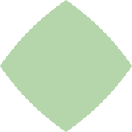

How we feel now
차곡차곡 쌓인 아카이버들의 감정 기록을 열어보세요


말랑한 구름 · 1시간 전
"너무 예쁜 공간! 오랜만에 행복했다"
📍 회현 피크닉(piknic)프로혼놀러 · 1시간 전
"럭키비키! 우연히 들어왔는데 내 취향 다 때려 박은 공간"
📍 그라운드시소 성수취미는 사진 · 2시간 전
"사진 엄청 잘 나오는 곳! 인생샷 건져서 오늘 기분 최고"
📍 성수 익명의 감정들동네 고양이 · 1시간 전
"귀여운 거 잔뜩 볼 수 있어서 쌓였던 우울함이 싹 가셨다"
📍 서울숲 디뮤지엄산책하는 먼지 · 2시간 전
"귀여운 거 + 예쁜 거 = 심장 아픔... 여기서 몽글몽글하게 힐링"
📍 삼청동 국제갤러리집순이 · 4시간 전
"오랜만에 전시 봤는데 너무 좋았다! 오늘 내 기분: 맑음"
📍 예술의전당 한가람미술관무계획 즉흥러 · 3시간 전
"행복 별거 없네! 전시 보고 가득 충전 완료"
📍 국립현대미술관 서울아카이버가 다녀온 공간은...
익명의 감정들


무드카이브(Moodchive)는 감정 기반 공간 추천 아카이브의 첫 오프라인 단독 기획전인 <익명의 감정들>을 개최한다. 이번 전시는 무드카이브 플랫폼에 누적된 수많은 익명의 감정 기록들을 시각, 청각 등 다감각적인 미디어 아트로 구현하여 다채로운 공간으로 구성된다.
전시는 기쁨, 슬픔, 위로, 공감 등 인간이 느끼는 보편적인 감정의 스펙트럼을 조명하며, 바쁘게 흘러가는 현대 사회 속에서 온전히 자신의 내면을 들여다보고 타인과 연결되는 공감의 장을 마련하고자 한다. 관람객이 직접 자신의 감정을 기록하고 이를 실시간으로 시각화하는 인터랙티브 아트 공간을 비롯하여, 타인의 기록에 깊이 몰입할 수 있는 미디어 전시가 포함되어 감정을 매개로 끊임없이 소통하는 무드카이브의 지향점을 심층적으로 소개한다.
기간
2026-10-01 ~ 2026-10-28
장소
성수 무드 랩 (서울 성동구 39-7 무드아카이브랩 5F)
주최/주관
무드카이브(Moodchive)
관람료
무료 (무드카이브 회원 인증 시)
이 공간에서 가장 많이 기록된 감정은...
행복한
0%
28%
10%
6%
4%
아카이버들의 아카이브
이곳을 방문하셨다면 MY LOG에서 기록해보세요
기록하러 가기 ▶
온전히 내 안의 작은 행복을 마주할 수 있었다
지친 일상 속에서 다정한 위로와 웃음을 얻고 가요
잊고 있었던 행복을 다시 찾았어요!

나를 더 아끼고 사랑해야겠다고 다짐하게 만든 공간
비어있는 공간이 주는 편안함에 깊이 몰입했어요
내 감정을 돌아볼 수 있었던 시간
평범했던 오늘 하루가 특별하고 다정하게 기억될 것 같아요
다채로운 빛과 함께 내 마음도 환해지는 기분!
거창하지 않아도 충분히 벅찬 일상의 소중함을 깨달았어요
내 안의 불안함도 결국 나의 일부임을 깨달았어요